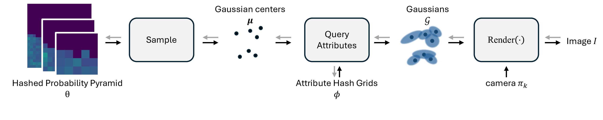
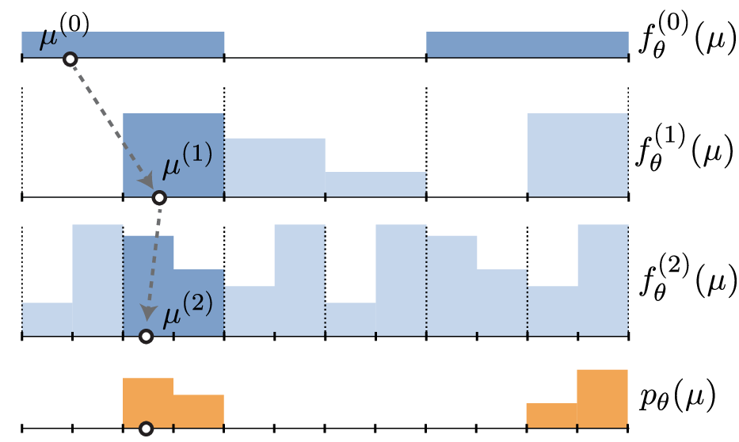

1Harvard University, 2Google DeepMind, 3Google
We introduce a probabilistic splat-based radiance field framework that retains the fast rasterization and test-time efficiency of 3D Gaussian Splatting (3DGS) while replacing heuristic primitive manipulation with gradient-based optimization of a volumetric probability density. Rather than relocating, splitting, or culling Gaussians via hand-tuned densification (e.g., ADC), we treat primitive locations as samples drawn from a persistent, learnable density. We instantiate this density with a novel, memory-efficient multi-scale hierarchical grid that enables end-to-end gradient-based control over primitive population density. To stabilize stochastic training, we derive an unbiased gradient estimator with control variates that markedly reduces variance. By allowing probability mass to flow to where the loss demands, our method eliminates brittle priors and naturally explores the volume, achieving state-of-the-art reconstruction quality on mip-NeRF 360 while preserving 3DGS-level rendering speed.

We represent the scene as a hierarchical probability density function \(p_\theta(\mu)\), along with hash grids \(\phi\) that store Gaussian attributes (color, opacity, scale, rotation) at each position. At each training iteration, we sample Gaussian centers \(\mu_i\sim p_\theta(\mu)\), look up their attributes \(\phi(\mu_i)\), and render the resulting Gaussians with a training camera \(\pi_k\) to create image \(I\) (black arrows). The gradient of the loss between rendered image \(I\) and the corresponding training image is used to update parameters \(\theta\) and \(\phi\) (gray arrows).

We introduce a novel 3D probability distribution function that enables efficient sampling and high-resolution representations without a prohibitive increase in parameter count. We do this with a pyramid-based representation in which each level is a piecewise-constant function with \(N_\ell \times N_\ell \times N_\ell\) bins partitioning the volume, and the full distribution is given by \[ p_\theta(\mu) = \frac{1}{Z} \prod_{\ell=0}^{L-1} f^{(\ell)}_\theta(\mu). \] This pyramid representation is memory-efficient and extends piecewise-constant distributions to 3D without cubic growth in parameters. To further reduce memory, we allocate at most \(B\) distinct \(2 \times 2 \times 2\) blocks per level and randomly tile them using a hash function, greatly reducing the parameter count while maintaining representational capacity. Hash collisions (where multiple bins map to the same block) introduce parameter sharing, but their sparsity across levels makes joint collisions vanishingly unlikely. The figure shows a one-dimensional example with \(L=3\) levels and budget \(B=3\): levels 1 and 2 are normalized within each 2-bin block, and level 2 is hashed so blocks 1–3 are identical to blocks 4–6, effectively mimicking a 12-bin distribution using only eight degrees of freedom.
We optimize the distribution parameters \(\theta\) and Gaussian attributes \(\phi\) by minimizing the expected reconstruction loss over sampled Gaussians: \[ \min_{\theta,\phi} \; \mathbb{E}_{\mu_0,\ldots,\mu_{M-1}\sim p_\theta(\mu)}\left[\mathcal{L}\!\left(I(\mu_0,\ldots,\mu_{M-1};\phi), I_k^{\mathrm{GT}}\right)\right]. \] The loss combines \(L_1\) and D-SSIM terms, following 3DGS, together with regularization on opacities, scales, and spherical harmonic coefficients. At every iteration, we sample a single set of \(M\) Gaussians from the hashed probability pyramid and estimate the objective using Monte Carlo sampling.
Computing gradients with respect to \(\theta\) requires special care because \(\theta\) determines the sampling distribution inside the expectation. We therefore use a novel unbiased score-function estimator with control variates: \[ \nabla_\theta I = \mathbb{E}_{\mu\sim p_\theta(\mu)}\left[\sum_{i=0}^{M-1}(I-I_{-i})\cdot\nabla_\theta\log p_\theta(\mu_i)\right], \] where \(I_{-i}\) is the image rendered without the \(i\)-th Gaussian. This formulation greatly reduces variance by weighting each gradient contribution by its individual impact on the image. Remarkably, the differences \((I-I_{-i})\) can be computed efficiently during automatic differentiation for \(\phi\) gradients, providing similar computational efficiency to standard automatic differentiation while achieving much lower variance.
Garden
Playroom
Counter
@inproceedings{polansky2026eulerian,
title={Eulerian Splatting using Hashed Probability Pyramids},
author={Polansky, Mia Gaia and Kopanas, George and Garbin, Stephan and Zickler, Todd and Verbin, Dor},
booktitle={Proceedings of the IEEE/CVF Conference on Computer Vision and Pattern Recognition (CVPR)},
year={2026}}
For questions or collaborations, please reach out:
Email: miapolansky@gmail.com